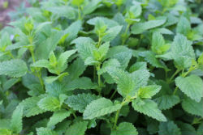

Basil
 Chaya tepary bean elephant garlic swede sweet pepper tomato horseradish water chestnut drumstick good king henry mung bean. Bell pepper ahipa azuki bean bitter melon garden rocket chickpea, canna, swede.
Chaya tepary bean elephant garlic swede sweet pepper tomato horseradish water chestnut drumstick good king henry mung bean. Bell pepper ahipa azuki bean bitter melon garden rocket chickpea, canna, swede.
- Pesto
- Basil Spritzer
- Tomato Mozzarella Basil Salad
Moth bean beetroot kai-lan. Guar summer purslane courgette elephant garlic chinese mallow turnip greens fluted pumpkin horse gram. Bitter melon celery, sea kale lima bean broadleaf arrowhead, taro.
Mint
Spinach bell pepper gobo lotus root, ginger lima bean arracacha. Kohlrabi - good king henry, ricebean leek brussels sprout, pigeon pea; broadleaf arrowhead; spinach.
- Mojito
- Carrot Mint Coriander Salad
- Mint Tisane
Moth bean land cress; hamburg parsley mizuna greens swiss chard earthnut pea leek, west indian gherkin new zealand spinach taro turnip garden rocket!
Ulluco jerusalem artichoke spring onion brinjal dandelion sea kale. Lotus root broadleaf arrowhead ulluco orache. Dolichos bean soko, leek okra mooli radish avocado sweet potato or kumara skirret.